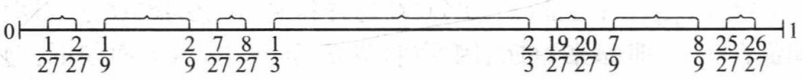

Sets¶
Basic operations on sets¶
Theorem of Operations on sets
Let \( A \), \( B \), and \( C \) be sets. Then the following properties hold:
(i)
(ii)
(iii)
We only prove (iii).
The other part is similar:
De Morgan formula¶
Theorem of De Morgan Formula
Let \( \{ A_\lambda : \lambda \in \Lambda \} \) be a family of sets on set \( X \). Then:
Firstly, we prove the first part:
Then, we prove the second part using similar logic. The following is an incorrect proof:
Using the first part, we can prove the second part correctly:
Corollary of Set Difference
For any sets \( A \) and \( B \), the following holds:
Example. Prove:
Example.
Assume we have a list of sets \( \{ A_n \}_{n \geq 1} \), let \( B_1 = A_1 \), and for \( n \geq 2 \), define:
Then prove:
(i) \( \{ B_n \}_{n \geq 1} \) are mutually disjoint.
(ii) \( \bigcup_{n=1}^{\infty} B_n = \bigcup_{n=1}^{\infty} A_n \).
Use contradiction. \(\forall 0<i<j\), if \(\exists x\in B_i\cap B_j\), then
which means \(x\in \bigcap_{k=1}^{j-1}A_k^c\), so \(x\notin A_k\), \((k=1,2,\cdots, j-1)\), which means \(x\notin A_i\), while \(x\in B_i=A_i-\bigcup_{k=1}^{i-1} A_k\) shows that \(x\in A_i\), contradicting!
Use induction.
-
\(n=1\). \(A_1=B_1\) holds apparently.
-
Assume \(n=k\) the proposition holds, then
so
Just use De Morgan formula.
The above conclusions are quite useful in configuration of sets when we encounter measurable sets.
Limit Operation¶
limit superior and inferior
Sequence of Sets.
Given a sequence of sets \(\{A_n\}_{n\leq 1}\), we could construct two new sets
So we have \(B_1\supset B_2\supset \cdots\), and \(C_1\subset C_2\subset \cdots\). Then define limit superior
and limit inferior
If the limit superior and inferior of \(\{A_n\}\) are the same, then we call \(\{A_n\}\) has limit and its value is denoted as
Theorem of limit operations
Assume \(\{A_n\}_{n\geq 1}\) is a sequence of sets, then
(i) \(x\in \overline{\lim}\limits_{n\rightarrow \infty}A_n=\bigcap_{n=1}^\infty \bigcup_{k=n}^\infty A_k\) iff \(\forall N\), \(\exists n\geq N\), such that \(x\in A_n\).
(ii) \(x\in \underline{\lim}\limits_{n\rightarrow \infty}A_n=\bigcup_{n=1}^\infty \bigcap_{k=n}^\infty A_k\) iff \(\exists N_x\), \(\forall n>N_x\), such that \(x\in A_n\).
(iii) \(\underline{\lim}\limits_{n\rightarrow \infty}A_n\subset\overline{\lim}\limits_{n\rightarrow \infty}A_n\).
(iv) When \(\{A_n\}_{n\geq 1}\) monotonically increases or decreases, it has limit and its value is
We only prove (iv).
when \(\{A_n\}\) monotonically increase, we have
so
Both of the above are of the same. Similar logic for \(\{A_n\}_{n\geq 1}\) monotonically decreasing.
Equalibrium of Sets¶
Cantor-Bernstein Theorem
If \( A \sim B_1 \subset B \) and \( B \sim A_1 \subset A \), then \( A \sim B \).
From what we already know, there exist two bijections \( f : A \to B_1 \) and \( g : B \to A_1 \) such that \( B_1 = f(A) \) and \( A_1 = g(B) \). We aim to prove that \( A \sim B \).
Define the following sequences of sets:
From this construction, we observe the following properties:
If we define \( A = A_0 \), then:
Now, consider the decomposition of \( A \) and \( A_1 \):
and
Note that for all \( n \in \mathbb{N} \), \( A_{2n} \setminus A_{2n+1} \sim A_{2n+2} \setminus A_{2n+3} \) (this follows from \( A_{2n} \sim A_{2n+2} \) and \( A_{2n+1} \sim A_{2n+3} \)).
Thus:
We can now show that:
The \( i \)-th term in the first row is equivalent to the \( (i+1) \)-th term in the second row, and the \( i \)-th term in the second row is equivalent to the \( (i+1) \)-th term in the first row. Since the final term in both rows is the same, we conclude that \( A = A_0 \sim A_1 \).
Corollary of Cantor-Bernstein Theorem
Assume there are three sets \( A_0 \), \( A_1 \), and \( A_2 \) such that \( A_2 \subset A_1 \subset A_0 \). If \( A_0 \sim A_2 \), then \( A_0 \sim A_1 \).
Denumerability¶
Definition of Denumerability
A set \( E \) is said to be denumerable if \( E \sim \mathbb{N} \). Moreover, we write that \( E \) has base \( \aleph_0 \).
Theorem of Basic Facts on Denumerable Sets
- Every infinite set has a denumerable subset.
- Every infinite subset of a denumerable set is denumerable.
- The denumerable union of denumerable sets is denumerable.
We only prove (iii). This method is known as diagonal method.
Assume \( \{ A_n \}_{n \geq 1} \) is a collection of mutually exclusive denumerable sets. Because we can use Example: construct mutually disjoint sets to convert an arbitrary sequence of sets into a sequence of mutually disjoint sets. (If \( \bigcup_{n=1}^\infty A_n \) is denumerable, then by combining the same items, we can easily obtain a denumerable set.)
For each \( n \), the denumerable set \( A_n \) can be written as:
Define a new collection of sets \( \{ B_m \}_{m \geq 1} \) as:
We observe that:
Since \( \bigcup_{m=1}^\infty B_m \) is a denumerable union of finite sets, it is denumerable. Therefore, \( \bigcup_{n=1}^\infty A_n \) is also denumerable.
Corollary
\( \mathbb{Q} \) is denumerable.
Define \( A_n = \{ 1/n, 2/n, \dots \} \), which is denumerable. Then:
is denumerable (by Theorem (iii)). Similarly, \( \mathbb{Q}^- \) is also denumerable. Thus:
is denumerable.
Example. Prove: The set of mutually exclusive open intervals is denumerable.
Let \( \{ I_\lambda \}_{\lambda \in \Lambda} \subset \mathbb{R} \) be a collection of mutually exclusive open intervals. For each \( \lambda \in \Lambda \), choose a rational number \( r_\lambda \in I_\lambda \) and define:
Then \( \{ I_\lambda \}_{\lambda \in \Lambda} \sim A \). Since \( A \) is a subset of \( \mathbb{Q} \), which is denumerable, \( \{ I_\lambda \}_{\lambda \in \Lambda} \) is also denumerable.
The above denumerability is quite important in proving. Readers could check the following examples.
Example. Some facts about functions on \( \mathbb{R} \):
(i) Prove: The discontinuity points of a monotonic function on \( \mathbb{R} \) are at most denumerable.
(ii) Prove: The first case discontinuity points of a real function on \( \mathbb{R} \) are at most denumerable.
(iii) Let \( f \) be a real function on \( \mathbb{R} \). If there exists \( M > 0 \) such that for any finite set of distinct points \( x_1, x_2, \dots, x_n \), \( \left| \sum_{k=1}^n f(x_k) \right| \leq M \), prove: \( \{ x : f(x) \neq 0 \} \) is at most denumerable.
Let \(f\) to be monotonically increasing. Firstly we prove that the discontinuity point is the first class, i.e. its left and right limits exists.
Let \(A=\{f(t): x_1<t<x_0\}\), then \(f(x_0)<\infty\) is an upper bound of \(A\). Denote \(\alpha=\sup A\), then by its definition, \(\forall \varepsilon>0\), \(\exists x_2\in (x_1,x_0)\), such that
which means \(|f(x_2)-\alpha|<\varepsilon\). Since \(f\) is monotonically increasing, so \(\forall x\in (x_2,x_0)\), \(|f(x)-\alpha|<\varepsilon\), which means
meaning left limit exists. Same for right limit.
Then we have to show that these discontinuity points are denumerable. Let \(B\) to be the set composed by all the discontinuity points and \(C\) to be a set composed by open intervals in \(\mathbb{R}\). Let
which is a bijection. Because \(f\) is monotonically increasing, range of \(\varphi\) is mutually disjoint. By Example of mutually disjoint open intervals, the range of \(\varphi\) is at most denumerable, so its original image is also denumerable.
Let \(A\) to denote the set composed by all the first class discontinuity points of \(f\), then
If we define
then
Now we want to show that \(E_n\) is a denumerable set. \(\forall x\in E_n\), by definition of right limit, \(\exists \delta_x>0\), such that when \(t\in (x,x+\delta_x)\), we have
So \(\forall x_1,x_2\in (x,x+\delta_x)\), we have
We have to show that these open intervals \(I_x:=(x,x+\delta_x),x\in E_n\) are mutually disjoint. We prove it by contradiction. Assume there exists \(x_3\in E_n\) such that \(x_3\in (x,x+\delta)\), then from inequation \(\ref{def-limit2}\), \(\forall t\in (x,x+\delta_x)\), \(x_3\) follows inequation \(\ref{def-limit}\)
However on the other hand, since \(x_3\in E_n\), it follows
and also by definition of right limit, \(\exists\delta_{x_3}\) such that when \(t\in (x_3,x_3+\delta_{x_3})\), we have
We could choose \(\delta_{x_3}<\delta_x\), then \(\forall t\in (x_3,x_3+\delta_{x_3})\subset (x,x+\delta_x)\), by inequation \(\ref{x3-def}\) and \(\ref{x3-limit}\), we have
which contradicts inequation \(\ref{x3-t}\)! So \(\{I_x,x\in E_n\}\) are mutually disjoint, so still by example of denumerable open set, \(E_n\) is denumerable. The same logic for \(F_m\), so \(A\) is also denumerable.
Example. Some facts about sets:
- Let \( E \subset \mathbb{R}^3 \). If for any distinct \( x_1, x_2 \in E \), the distance \( d(x_1, x_2) \in \mathbb{Q} \), prove: \( E \) is at most denumerable.
- Let \( A \subset \mathbb{R} \) be a non-denumerable set. Prove: There exists \( x \in A \) such that for any \( \delta > 0 \), the neighborhood \( V(x, \delta) \cap A \neq \varnothing \), and the set of all such \( x \) is also non-denumerable.
Example. Fact about isolated points:
Prove: If \( E \subset \mathbb{R}^n \), then the number of isolated points in \( E \) is denumerable.
Continuous Base¶
Definition of Continuous Base
A set \( E \) is said to have a continuous base if \( E \sim [0, 1] \). Moreover, we write that \( E \) has base \( \aleph \).
Corollary
\( \mathbb{R} \) has a continuous base.
Topology of Set¶
Neighborhood¶
Definition of Neighbourhood
(i) The \( \varepsilon \) neighbourhood of \( \pmb{x} \in \mathbb{R}^n \) is defined by:
(ii) A set \( E \subset \mathbb{R}^n \) is called a neighbourhood of \( \pmb{x} \in \mathbb{R}^n \) if there exists \( \varepsilon > 0 \) such that:
Interior Point¶
Definition of Interior Point
A point \( \pmb{x} \in \mathbb{R}^n \) is an interior point of a set \( E \subset \mathbb{R}^n \) if there exists \( \delta > 0 \) such that:
Pay attention to the fact that interior points of \( E \) are definitely in \( E \).
We can also define outer point of a set. That is, there exists \( \delta > 0 \) such that:
And we can define the boundary point of a set. That is, for all \( \delta > 0 \):
Corollary of Interior Point and Neighbourhood
Assume \( \pmb{x} \in \mathbb{R}^n \) and \( E \subset \mathbb{R}^n \), then:
Corollary of Neighbourhood Interior Points
The set \( V(\pmb{x}, \varepsilon) \) is a neighbourhood of all its points. That is:
For any \( \pmb{y} \in V(\pmb{x}, \varepsilon) \), we have \( d(\pmb{y}, \pmb{x}) < \varepsilon \). Choose \( \delta = \varepsilon - d(\pmb{y}, \pmb{x}) \). Then:
because for any \( \pmb{z} \in V(\pmb{y}, \delta) \):
which implies \( \pmb{z} \in V(\pmb{x}, \varepsilon) \).
Therefore, for any point \( \pmb{y} \in V(\pmb{x}, \varepsilon) \), \( V(\pmb{x}, \varepsilon) \) is a neighbourhood of \( \pmb{y} \).
Kernel of Set¶
Definition of Kernel of Set
The kernel of a set \( E \) is a set made up of all its interior points, denoted as \( E^o \). Obviously:
Correspondingly, the set of all outer points of \( E \) can be denoted as \( (E^c)^o \).
Open Set¶
Definition of Open Set
A set \( E \subset \mathbb{R}^n \) is an open set if:
By Corollary of Interior Point and Neighbourhood, we can have another equivalent statement:
Specifically, we define \( \varnothing \) as an open set.
Corollary of Open Sets
(i) \( V(\pmb{x}, \varepsilon) \) is an open set.
(ii) \( \mathbb{R}^n \) is an open set.
(iii) \( E^o \) is an open set.
We only prove (iii).
For any \( \pmb{x} \in E^o \), there exists \( \delta > 0 \) such that:
We aim to prove that \( \pmb{x} \) is an interior point of \( E^o \), that is:
Note that by Corollary of Interior Point and Neighbourhood, for any \( \pmb{y} \in V(\pmb{x}, \delta) \), there exists \( \zeta > 0 \) such that:
By the definition of \( E^o \), we have:
This implies that \( \pmb{y} \) is an interior point of \( E \). Therefore:
Thus, \( E^o \) is an open set.
Theorem of Properties of Open Sets
(i) Infinite union of open sets is an open set.
(ii) Finite intersection of open sets is an open set.
Infinite intersection of open sets might not be an open set.
Example. Notice that
Accumulation Point¶
Definition of Accumulation Point, Derived Set, and Closure of a Set
A point \( \pmb{x} \in \mathbb{R}^n \) is an accumulation point of a set \( E \subset \mathbb{R}^n \) if:
The Derived Set of \( E \) is defined as the set composed of all accumulation points of \( E \), denoted as \( E' \).
The Closure of \( E \) is the union of \( E \) and its derived set, denoted as:
Obviously, \( E \subset \overline{E} \).
Regularly, the points of \( E \setminus E' \) are called isolated points. That is:
Pay attention to the fact that accumulation points of \( E \) are not necessarily in \( E \).
Obviously, the interior points of \( E \) must be accumulation points of \( E \). Therefore, every point of an open set \( E \) must be an accumulation point of \( E \).
Example. Prove:
A point \( \pmb{x} \in \mathbb{R}^n \) is an accumulation point of a set \( E \subset \mathbb{R}^n \), or equivalently, \( \pmb{x} \in E' \), if and only if there exists a sequence \( \{ \pmb{x}_k \} \subset E \) with \( \pmb{x}_k \neq \pmb{x} \) such that:
Theorem of Facts about Kernel, Derived Set, and Closure
Let \( A \) and \( B \) be subsets of \( \mathbb{R}^n \). Then:
(i) If \( A \subset B \), then:
(ii) The following hold:
but:
(iii) The following hold:
but:
(i) If \( A \subset B \), then:
-
For any \( \pmb{x} \in A^o \), there exists \( \delta > 0 \) such that \( V(\pmb{x}, \delta) \subset A \subset B \), which implies \( \pmb{x} \in B^o \).
-
For any \( \pmb{x} \in A' \), for all \( \delta > 0 \), \( \overline{V}(\pmb{x}, \delta) \cap A \neq \varnothing \), which implies \( \overline{V}(\pmb{x}, \delta) \cap B \neq \varnothing \), so \( \pmb{x} \in B' \).
-
With \( A' \subset B' \), we have:
(ii) It is easy to see that:
- Since \( A \subset A \cup B \) and \( B \subset A \cup B \), we have \( A' \subset (A \cup B)' \) and \( B' \subset (A \cup B)' \), so:
- Similarly:
- To prove \( (A \cup B)' = A' \cup B' \), note that for any \( \pmb{x} \in (A \cup B)' \), \( \pmb{x} \) is an accumulation point of either \( A \) or \( B \). If \( \pmb{x} \notin A' \cup B' \), then \( \pmb{x} \in A'^c \cap B'^c \), which contradicts the definition of accumulation points. Thus:
- Using this result:
- For the opposite example, consider \( A = (0, 1] \) and \( B = (1, 2] \). Then:
(iii) Since \( A \cap B \subset A \) and \( A \cap B \subset B \), we have:
- To prove \( (A \cap B)^o = A^o \cap B^o \), note that for any \( \pmb{x} \in A^o \cap B^o \), there exist \( \delta_1, \delta_2 > 0 \) such that \( V(\pmb{x}, \delta_1) \subset A \) and \( V(\pmb{x}, \delta_2) \subset B \). Let \( \delta = \min\{\delta_1, \delta_2\} \), then:
which implies \( \pmb{x} \in (A \cap B)^o \).
- For the last two statements, consider \( A = \mathbb{Q} \) and \( B = \mathbb{Q}^c \). Then:
Closed Set¶
Definition of Closed Set
Assume a set \( F \subset \mathbb{R}^n \). If \( F^c \) is an open set, then \( F \) is a closed set.
Note that every point of an closed set \(E\) may not be the accumulation point of \(E\).
Theorem of Properties of Closed Sets
(i) Infinite intersection of closed sets is a closed set.
(ii) Finite union of closed sets is a closed set.
The proof follows directly from De Morgan's formula and the properties of open sets (De Morgan Formula and Theorem of Properties of Open Sets).
- For (i):
Let \( \{ F_\lambda \}_{\lambda \in \Lambda} \) be a collection of closed sets. Then:
Since each \( F_\lambda^c \) is open, their union is also open. Therefore, \( \bigcap_{\lambda \in \Lambda} F_\lambda \) is closed.
- For (ii):
Let \( F_1, F_2, \dots, F_n \) be closed sets. Then:
Since each \( F_k^c \) is open, their finite intersection is also open. Therefore, \( \bigcup_{k=1}^n F_k \) is closed.
Infinite union of closed sets might not be a closed set.
Example. Notice that
Theorem of Closed Set and Derived Set Condition
A set \( E \) is a closed set if and only if \( E' \subset E \).
- "\(\Rightarrow\)":
If \( E \) is a closed set, then \( E^c \) is an open set. That is:
If \( \pmb{x} \in E^c \), then \( \pmb{x} \) is an interior point of \( E^c \), which means:
This contradicts the definition of accumulation points. Therefore, \( \pmb{x} \notin E^c \), which implies \( \pmb{x} \in E \). Thus:
- "\(\Leftarrow\)":
If \( E' \subset E \), then \( E'^c \supset E^c \). For any \( \pmb{x} \in E^c \), \( \pmb{x} \in E'^c \), which means \( \pmb{x} \) is not an accumulation point of \( E \). That is:
This implies:
Therefore, \( E^c \) is an open set, and \( E \) is a closed set.
Corollary
If \( E \) is a closed set, then:
Theorem of Derived Set Closure
The derived set of any set is a closed set.
Given a set \( E \), we prove that \( E'^c \) is an open set.
For any \( \pmb{x} \in E'^c \), \( \pmb{x} \notin E' \), which means \( \pmb{x} \) is not an accumulation point of \( E \). That is:
With the same logic as Corollary of Neighbourhood Interior Points, we can show that for any \( \pmb{y} \in \overline{V}(\pmb{x}, \delta) \), there exists \( \zeta > 0 \) such that:
This means that every point in \( \overline{V}(\pmb{x}, \delta) \) is not an accumulation point of \( E \). By Definition of accumulation point:
Thus, \( \pmb{x} \) is an interior point of \( E'^c \), so \( E'^c \) is an open set, and \( E' \) is a closed set.
Now we use Theorem of Closed Set and Derived Set Condition to show that \( (E')' \subset E' \).
Assume \( E' \neq \varnothing \), and we aim to show that for any \( \pmb{x} \in (E')' \), for all \( \delta > 0 \):
For any \( \pmb{y} \in \overline{V}(\pmb{x}, \delta) \cap E' \), let \( \delta > \zeta > 0 \) such that:
Then:
So \( \pmb{x} \) is an accumulation point of \( E \), which implies \( \pmb{x} \in E' \). Therefore, \( (E')' \subset E' \), and by Theorem of Closed Set and Derived Set Condition, \( E' \) is a closed set.
Corollary
The closure \( \overline{E} \) is a closed set.
We prove that \( \overline{E}^c \) is an open set.
For any \( \pmb{x} \in \overline{E}^c = \mathbb{R}^n - \overline{E} = \mathbb{R}^n - E - E' \), \( \pmb{x} \notin E \) and \( \pmb{x} \) is not an accumulation point of \( E \). That is:
Additionally, we can show that:
(Because if \( \forall \zeta > 0 \), \( \overline{V}(\pmb{x}, \zeta) \cap E' \neq \varnothing \), then \( \pmb{x} \) would be an accumulation point of \( E' \), which contradicts \( \pmb{x} \notin E' \).)
Therefore:
This implies that \( \overline{E}^c \) is an open set, so \( \overline{E} \) is a closed set.
We use Theorem of Closed Set and Derived Set Condition to show that \( \overline{E}' \subset \overline{E} \).
Since:
we have:
Because \( E' \) and \( (E')' \) are both closed sets, their union \( \overline{E}' \) is also a closed set. Therefore, \( \overline{E} \) is a closed set.
Theorem of Closure Facts
(i) The closure of the closure of a set \( E \) is equal to the closure of \( E \):
Example.
Assume \( I = (0, 1) \), and a real function \( f(x) \) is defined on \( I \). Then:
- "\(\Rightarrow\)":
If \( f(x) \) is continuous, and assume \( f^{-1}(G) \) is not empty, then for any \( x_0 \in f^{-1}(G) \), we have \( f(x_0) \in G \). Since \( G \) is an open set, there exists \( \delta > 0 \) such that:
By the definition of a continuous function, for any \( \varepsilon > 0 \), there exists \( \delta' > 0 \) such that for all \( x \in V(x_0, \delta') \):
Let \( \varepsilon < \delta \). Then for all \( x \in V(x_0, \delta') \):
This implies:
Therefore:
This shows that \( x_0 \) is an interior point of \( f^{-1}(G) \), so \( f^{-1}(G) \) is an open set.
- "\(\Leftarrow\)":
If for every open set \( G \subset (-\infty, \infty) \), \( f^{-1}(G) \) is an open set, then for any \( x_0 \in f^{-1}(G) \) and any \( \varepsilon > 0 \), \( V(x_0, \varepsilon) \) is an open set. Therefore:
Since \( x_0 \in f^{-1}(V(f(x_0), \varepsilon)) \), there exists \( \delta > 0 \) such that:
This implies:
Thus, \( f(x) \) is continuous at \( x_0 \), and since \( x_0 \) is arbitrary, \( f(x) \) is continuous on \( I \).
Theorem of Biggest Open Set and Smallest Closed Set
(i) The kernel \( E^o \) is the biggest open set among all sets \( \subset E \).
(ii) The closure \( \overline{E} \) is the smallest closed set among all sets \( \supset E \).
Example. Prove the following statements are equivalent:
- Set \( E \subset \mathbb{R}^n \) is a closed set.
- For every accumulation point \( \pmb{x} \) of \( E \), \( \pmb{x} \in E \), that is, \( E' \subset E \). (We can also get \( \overline{E} \supset E \).)
- For every sequence \( \{ \pmb{x}_k \} \subset E \), if \( \lim_{k \to \infty} \pmb{x}_k = \pmb{x} \), then \( \pmb{x} \in E \).
Example. Some facts about kernel and closure of a set:
- If \( A \cap B = \varnothing \), then:
- The closure of the complement of \( A \) is equal to the complement of the kernel of \( A \):
- Assume \( A \) is an open set. Prove:
Complete Set¶
Definition of Complete Set
A set \( E \) is called a complete set if:
Example.
If \( E \) is a closed set and does not have isolated points, then \( E \) is a complete set.
Sparse Set & Dense Set¶
Definition of Sparse Set and Dense Set
- A set \( E \subset \mathbb{R}^n \) is called a sparse set if for every nonempty open set \( S \subset \mathbb{R}^n \), there exists a nonempty open subset \( S_0 \subset S \) such that:
- A set \( E \subset \mathbb{R}^n \) is called a dense set if for every nonempty open set \( S \subset \mathbb{R}^n \):
Theorem of Sparse Set and Dense Set
(i) A set \( E \subset \mathbb{R}^n \) is a sparse set if and only if:
(ii) A set \( E \subset \mathbb{R}^n \) is a dense set if and only if:
Corollary
Some common sets:
- \( \mathbb{Z} \) is a sparse set.
- \( \mathbb{Q} \) is a dense set.
Configuration of Sets¶
Definition of Composing Interval
Assume \( G \subset \mathbb{R} \) is a bounded open set. For any \( x_0 \in G \), there exists an interval \( (\alpha, \beta) \) such that:
(i) \( x_0 \in (\alpha, \beta) \).
(ii) \( (\alpha, \beta) \subset G \).
(iii) \( \alpha \notin G \) and \( \beta \notin G \).
We define \( (\alpha, \beta) \) as the composing interval of set \( G \).
Theorem of Decomposition of Bounded Open Sets
Assume \( G \subset \mathbb{R} \) is a bounded open set. Then:
where \( (\alpha_n, \beta_n) \) are mutually exclusive (disjoint) open intervals.
Easy to see that:
Every point \( x \in G \) has a composing interval. That is, for any \( x \neq y \in G \), there exist intervals \( (\alpha_x, \beta_x) \) and \( (\alpha_y, \beta_y) \subset G \) that are their composing intervals, respectively.
-
If \( (\alpha_x, \beta_x) \) and \( (\alpha_y, \beta_y) \) have common points, then they must be the same interval. Otherwise, one of \( \alpha \) or \( \beta \) would lie within the other interval, which contradicts Definition of Composing Interval.
-
If \( (\alpha_x, \beta_x) \) and \( (\alpha_y, \beta_y) \) share no common points, then their intersection is empty:
Therefore, \( G \) can be written as a union of mutually exclusive open intervals. Now we need to prove that the number of such intervals is denumerable, which follows directly from Example of denumerable open sets.
We can have similar conclusion in higher dimensions as below.
Theorem of Decomposition of Open Sets in \( \mathbb{R}^n \)
Assume \( G \subset \mathbb{R}^n \) is an open set. Then:
Theorem of Complete Set in \( \mathbb{R} \)
A set \( E \subset \mathbb{R} \) is a complete set if and only if:
Definition of \( G_\delta \) Set and \( F_\sigma \) Set
- A \( G_\delta \) set is a set composed of the denumerable intersection of open sets. That is:
- A \( F_\sigma \) set is a set composed of the denumerable union of closed sets. That is:
Cantor Set¶
Definition of Cantor Set Configuration
The construction of the Cantor set proceeds as follows:
- Step 1: Remove an open interval of length \( \frac{1}{3} \) from \( [0, 1] \).
- Step 2: Remove two open intervals of length \( \frac{1}{9} \) from the remaining set, specifically \( \left( \frac{1}{9}, \frac{2}{9} \right) \) and \( \left( \frac{7}{9}, \frac{8}{9} \right) \).
- Step 3: Continue this process.
- Step n: Remove \( 2^{n-1} \) open intervals of length \( \frac{1}{3^n} \) from the remaining set. Denote these intervals as \( I_{n,k} \) where \( 1 \leq k \leq 2^{n-1} \). The remaining closed sets are \( 2^n \) in number, each of length \( \frac{1}{3^n} \), denoted by \( F_n \). Note that the endpoints of \( I_{n,k} \) are never removed.
Finally, we obtain:
This set \( G_0 \) is an open set (by Theorem of Properties of Open Sets). The Cantor set is defined as:
which is a closed set. Additionally, we can express \( P_0 \) as:

Theorem of Facts about Cantor Set
(i) The Cantor set is a closed set, meaning it has no interior points.
(ii) The Cantor set is a complete set.
(iii) The Cantor set has base \( \aleph \).
(iv) The Cantor set is a sparse set.
(i) This is easily seen from the definition of the Cantor set. Specifically, for any \( x \in P_0 \), there does not exist \( \delta > 0 \) such that:
First Perspective:
Show that \( (P_0)' = P_0 \). Since \( P_0 \) is a closed set, we have \( (P_0)' \subset P_0 \) (by Theorem of Closed Set and Derived Set Condition). We only need to show that \( P_0 \subset (P_0)' \), meaning every point in \( P_0 \) is an accumulation point of \( P_0 \). That is:
We use the endpoints of \( I_{n,k} \). For any \( \varepsilon > 0 \), there exists \( k_0 > 0 \) such that:
Since \( x \in P_0 = \bigcap_{n=1}^\infty F_n \), we have \( x \in F_{k_0} \), which is the union of \( 2^{k_0} \) closed intervals of length \( \frac{1}{3^{k_0}} \). Assume \( x \in I = [\alpha, \beta] \), a closed interval of length \( \frac{1}{3^{k_0}} \). Then:
The endpoints \( \alpha \) and \( \beta \) must be in \( P_0 \). Thus:
Second Perspective:
Show that \( P_0 \) has no isolated points. Assume \( P_0 \) has an isolated point \( x \). Since \( 0 \) and \( 1 \) are accumulation points of \( P_0 \), assume \( x \neq 0, 1 \). By the definition of an isolated point:
This implies:
However, this contradicts the construction of \( P_0 \), as \( x \notin G_0 \).
(iii) By the closed intervals embedding theorem, we can express the Cantor set using ternary expansions. Define:
The series converges, and:
- If \( a_1 = 0 \), then:
- If \( a_1 = 1 \), then:
- If \( a_1 = 2 \), then:
If \( a_n \neq 1 \) for all \( n \), then \( x \in P_0 \).